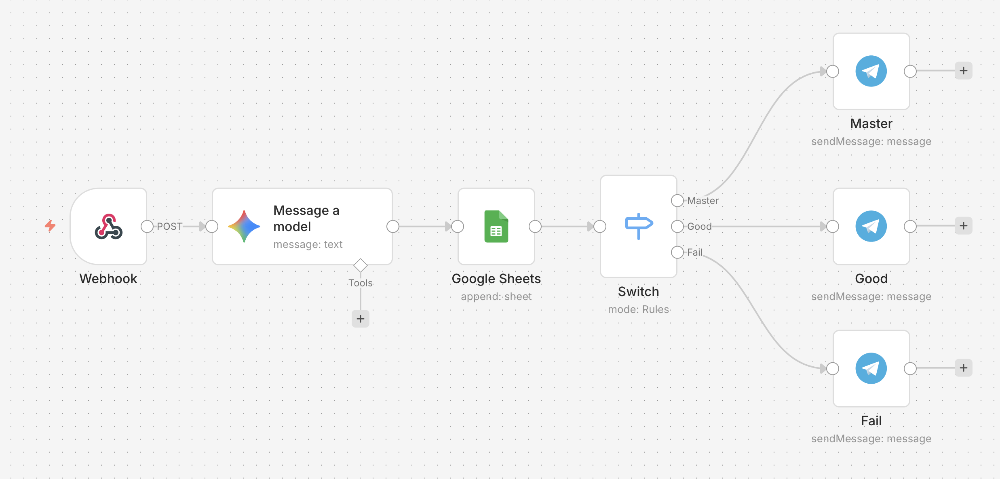
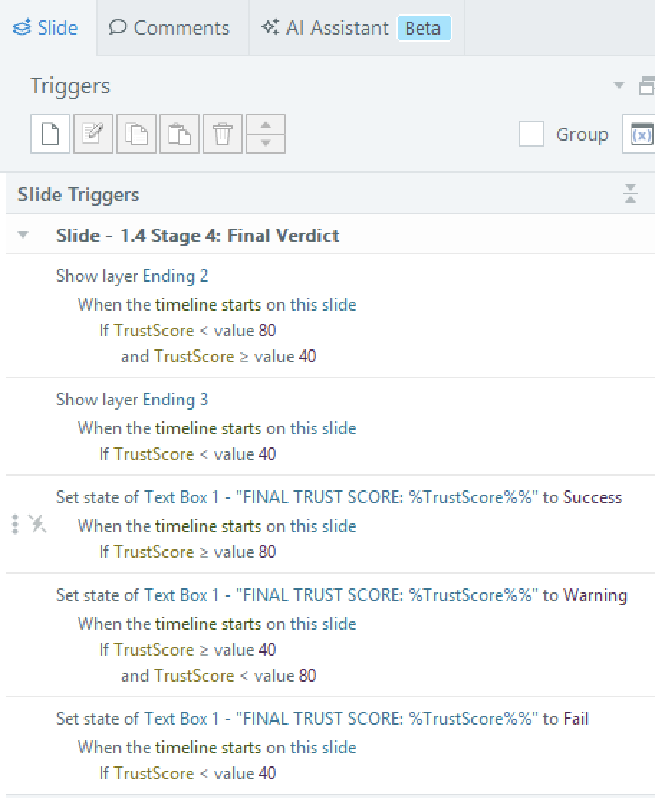
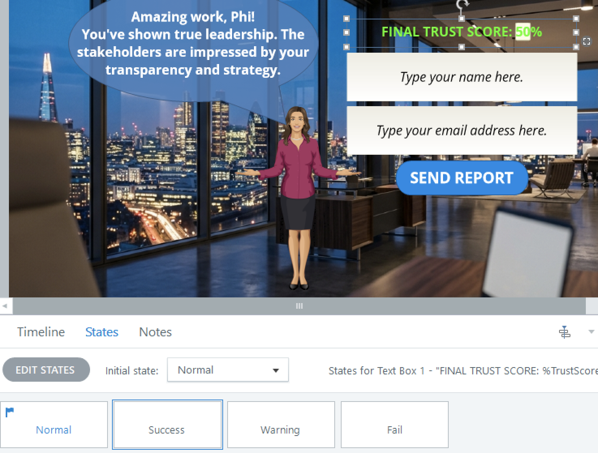
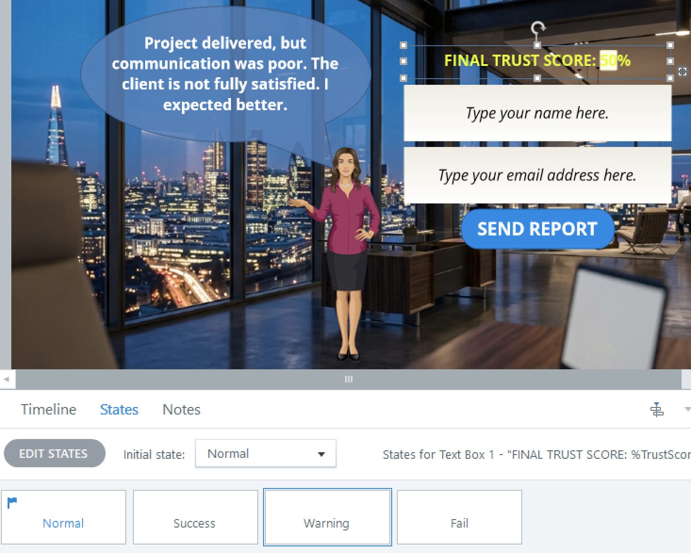
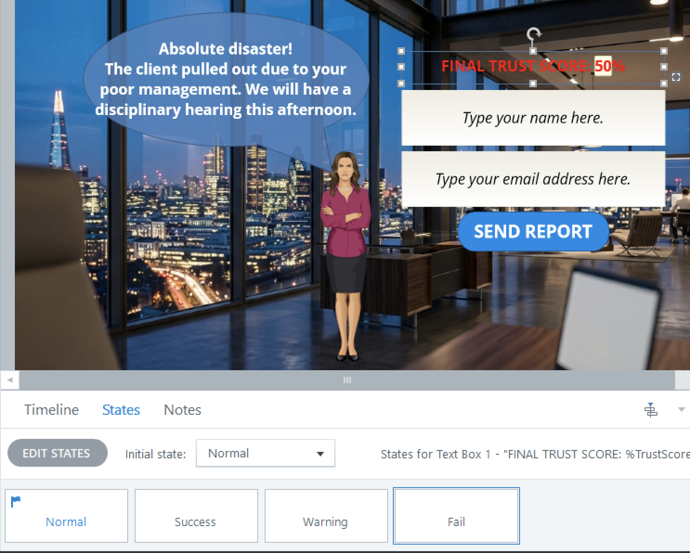
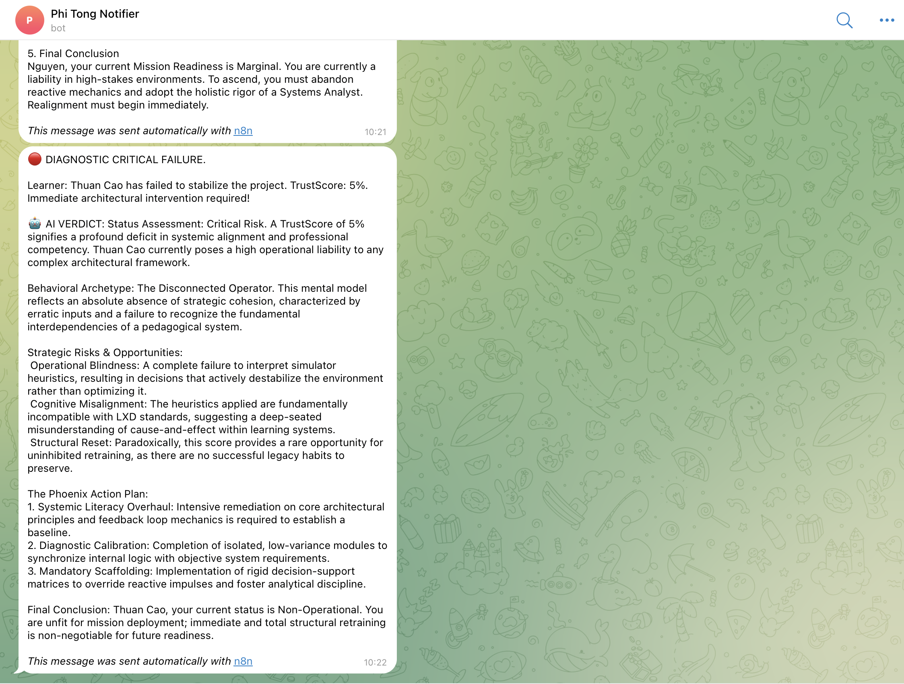
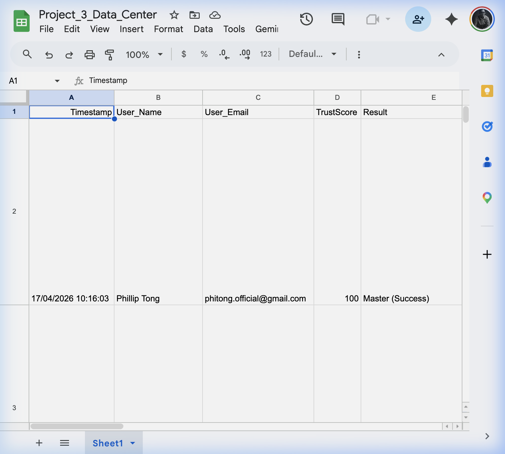

Standard eLearning development often hits a data wall: we know if a learner finished, but we have zero visibility into their decision-making logic. For high-stakes sales negotiation, "completion" is a vanity metric; behavioral insight is the real ROI.
I was responsible for the Technical Implementation for Titanium V8.0, ensuring a robust 100% remote workflow through a custom JavaScript (ES6) Data Bridge and n8n Serverless Integration.
The 48-Hour Window: Achieved 100% visibility into learner behavior, identifying struggling representatives within 48 hours—a 90% improvement.
Measurable Mastery: Developed a dynamic "TrustScore" system quantifying "Yes-man" vs. "Strategic Negotiator" archetypes for actionable performance data.
Technical Developer’s Takeaway: Titanium demonstrates my ability to transform pedagogical blueprints into production-ready technical systems while maintaining remote autonomy and global standards.
In high-pressure corporate environments, the way a lead handles a "Friday Night Crisis" defines the long-term health of the team. Standard e-learning (video + quiz) fails to capture the psychological stakes of real-time negotiation. Learners need an environment where their choices have immediate, visible consequences on stakeholder trust.
Simulate the "Trust Factor" between a Project Lead, a Client, and their internal Team using a dynamic multi-variable scoring system.
To overcome traditional SCORM limitations, I engineered a serverless data pipeline. This infrastructure enables granular tracking of every learner interaction, parallelizing data logging and real-time alerts.

In the production version of Titanium, I implemented a Zero-Trust Configuration Model and a Live AI Diagnostic Agent to ensure system integrity and automated feedback.
Externalized all API secrets into secure environment variables, ensuring the infrastructure remains hardened against credential leakage.
Integrated Google Gemini AI to provide real-time Automated Assessments. The system performs root-cause analysis, identifying learner gaps automatically.
As a 100% remote developer, I adhere to Async-First communication protocols to ensure project transparency and speed without constant meetings.
Every technical decision is recorded in an IDR (Implementation Decision Record), allowing team members to audit project evolution across any time zone.
Utilized Loom scripted walkthroughs and technical READMEs to ensure the technical bridge is 100% maintainable by any team member.
The simulator is divided into 3 high-stakes stages. Every decision updates a hidden global TrustScore, which determines the aesthetic and outcome of the final dashboard.
Balancing client pressure against resource reality. Testing "Yes-man" vs "Strategic Negotiator" patterns.
Formalizing strategies via high-stakes communication. Precision alignment with stakeholder expectations.
Leading under pressure. Gauging the impact of managerial stress on team psychological safety.

The UI is alive. Using state-driven CSS/Storyline triggers, the environment transforms its visual glow (Success, Warning, Danger) based on the user's current performance state.



Visual States: Dynamic environment transformations based on real-time TrustScore.
Behind the aesthetics lies the data. Stakeholders receive real-time, unbranded diagnostic alerts via Telegram, allowing for instant technical refinement while all data is logged into the master warehouse.


Unified Data Ecosystem: Synchronized Telegram alerts and Google Sheets behavioral heatmaps.